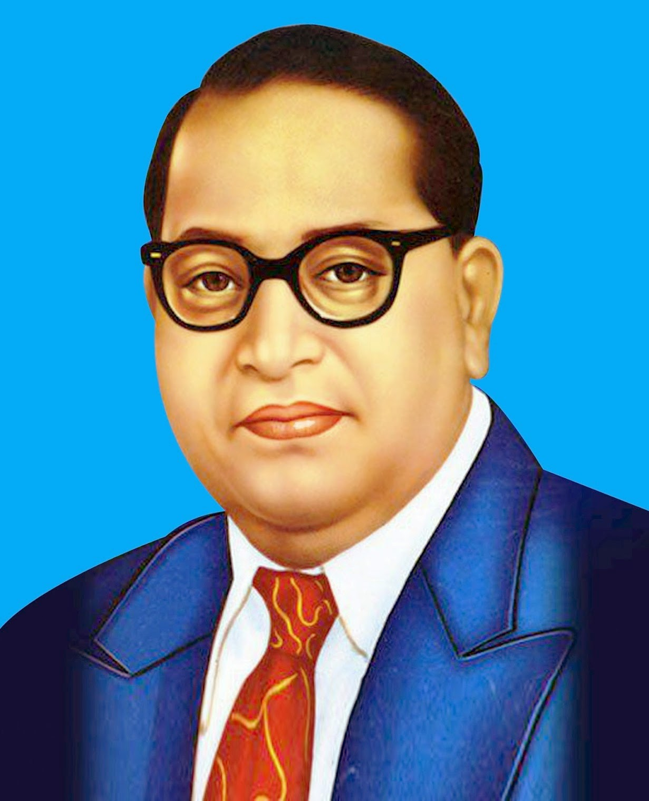

OVERFLOW PROPERTY

Bhimrao Ramji Ambedkar (14 April 1891 6 December 1956), popularly known
as Babasaheb, was an Indian jurist, economist, politician and social
reformer who Chaired the Drafting Committee of the Constituent Assembly
and was India's First Minister for Law and Justice.
click here for more information
Bhimrao Ramji Ambedkar (14 April 1891 6 December 1956), popularly known as
Babasaheb, was an Indian jurist, economist, politician and social reformer
who Chaired the Drafting Committee of the Constituent Assembly and was
India's First Minister for Law and Justice.

News. A.P.J. Abdul Kalam (born October 15, 1931, Rameswaram, India—died
July 27, 2015, Shillong) was an Indian scientist and politician who
played a leading role in the development of India's missile and nuclear
weapons programs. He was president of India from 2002 to 2007.
click here for more information
News. A.P.J. Abdul Kalam (born October 15, 1931, Rameswaram, India—died
July 27, 2015, Shillong) was an Indian scientist and politician who
played a leading role in the development of India's missile and nuclear
weapons programs. He was president of India from 2002 to 2007.